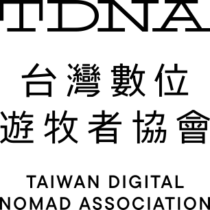

- 裁切標誌
- 更改排列組合
- 使用漸層色
- 更改比例（拉伸、壓扁）
2. 品牌標誌
Mark and twelve fixed lockups
Slab-serif TDNA: structure and organisation as the concept, balance and stability in the composition, liveliness from the slab terminals. Pick the lockup that fits the space; never re-assemble one.
logo-black.svg
stacked-squarestacked-zh-enstacked-zhstacked-enstacked-en2horizontal-zh-enhorizontal-zh2-en2horizontal-zhhorizontal-zh2horizontal-enwordmark-zh-enOn colour
*-white.svg*-white.svg*-black.svgClear space
Any lockup containing the mark keeps 50% of the mark height free on all sides; wordmark-only lockups use the cap height of the T. Minimum in UI: mark 24px tall; horizontal lockups 120px wide.
Do not
- 破壞或套用效果
- 增加陰影
- 更改標準字型
- 外框處理